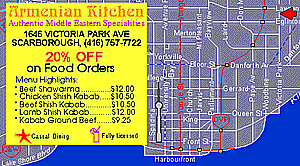

Store and Restaurant

It has an Armenian name, but serves Middle Eastern foods such as Shawarma. What can you tell me about the Armenian restaurants and stores in your area?
You can develop one of the following projects or work on an idea of your own.
A Are there many Armenian restaurants -or restaurants with a significant Armenian clientele- in your area? What do people eat there? Does part of the menu consist of Armenian dishes? What other kinds of food are on offer? Record and analyze the contents and looks of the Armenian restaurant menus in your area as a study of what and where Armenians eat outside the home.
B What would a map of Armenian stores -or stores owned by Armenians- in your community look like? Produce a pictorial shopping map of Armenian (or Armenian-owned) stores in your city, analyzing their types, specialties, concentration, etc.
C Can you come up with a documentary study of an Armenian store or restaurant? How about interviewing the owner, people who work there, and clients? What is on offer? What are their opening hours, holidays, busiest times of the day or year? How is the business doing? Produce a documentary on an Armenian store or restaurant, focusing on its place in the social fabric of your community.
(Click on the Acquaintance icon to go back)